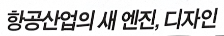

Yoon윤고딕105
윤고딕 105는 기존 고딕체의
산만한 느낌을 최소화한,
똑 떨어지는 핏이 인상적인 폰트입니다.
불필요한 세리프를 제거하여 종이는 물론
디지털 환경에서도 깔끔 하고
단정한 인상을 자랑하지요.
청바지에 흰 티처럼 기본에 충실하고 싶은 날,
꺼내쓰기 좋은 안정적인 폰트랍니다.
출시년도:2004
스펙:한글 11,172자 / 라틴 95자
한국 한자 4,888자 / 부호 985자